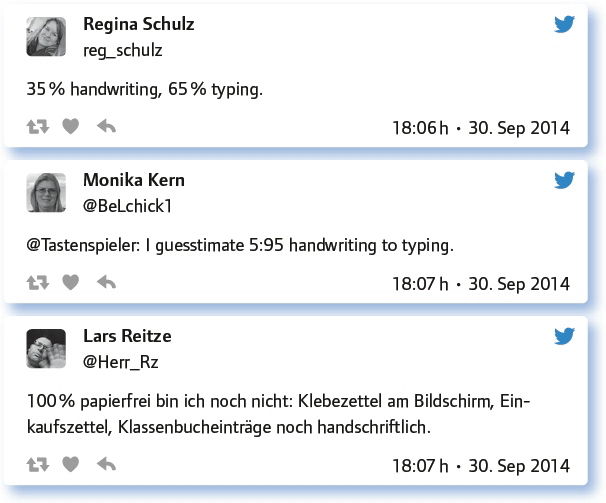

von Ines Bieler
Wenn man sich mit dem Thema der Handschrift in der Schule und ihre Bedeutung für den Lernprozess beschäftigt, stößt man auf kontroverse Meinungen. Es finden sich Forderungen, dass man besser keine Notizen am Laptop machen sollte (www.scientificamerican.com/article/a-learning-secret-don-t-take-notes-with-a-laptop/) bis hin zur Meldung von der Entscheidung Finnlands, die Handschrift in der Schule abschaffen zu wollen (www.spiegel.de/schulspiegel/ausland/schule-pisa-sieger-finnland-will-handschrift-abschaffen-a-1012000.html).
Dies ist ein heiß diskutiertes, sehr umstrittenes Thema. Wie sehen das die Teilgeber des #EDchatDE?
Kulturtechnik hin oder her: Wie sieht’s bei dir mit dem Verhältnis Handschrift und Schreiben am PC, Laptop, Tablet oder Smartphone aus?
Es folgen zunächst persönliche Einschätzungen:

Die Tendenz geht eindeutig zum Tippen – die einfache Archivierung und das leichtere Wiederfinden der Notizen hat für Lehrkräfte entscheidende Vorteile. Aber im persönlichen Bereich oder bei sehr schnellen und kurzen oder auch komplizierten Notizen, wie z. B. mathematischen Formelzeichen überwiegt der Stift.
Es geht natürlich auch eine Kombination aus beiden:
Und nun noch ein paar Zahlen:

Vielleicht erlebt die Handschrift ja ein digitales Revival? Die Technik macht’s möglich – mit den neuen digitalen Stiften in verschiedenen Varianten lässt es sich gut an Tablets schreiben.
Spannende Frage: – Wie sieht die weitere Entwicklung aus?
Was denkst du? Werden Lernende der jetzigen 1. Klasse in 5 Jahren noch mit der Hand schreiben und wenn ja, wie viel?
Auch in 5 Jahren wird auf die Handschrift nicht verzichtet werden können. Zu wichtig ist sie für den gesamten Lese-Schreib-Prozess.
Lernende in 5 Jahren werden denken „mit der Hand schreiben“ meint „am Smartphone schreiben“ – oder wie das Gerät dann heißt.
Das Problem ist die „Grundschrift“. DIE wird in 5 Jahren hoffentlich keiner mehr schreiben! https://t.co/b9kCEQP54T
Ja, aber weniger. Neue Eingabemöglichkeiten, gestenbasierte Bedienung, Spracherkennung und -steuerung drängen die Handschrift zurück.
Ist die Handschrift ein Relikt vergangener Zeit? Wertvolle Unterrichtszeit dafür verschwenden, oder was ist wichtiger?
Handschriftlich Schreiben können heißt auch unabhängig sein!
Ich würde auf jeden Fall Pflichtzeit für das Tippenlernen mit 10 Fingern blind vorsehen. Das spart Lebenszeit.
Es sollte eher gefragt werden, müssen alle SuS eine Druckschrift UND Schreibschrift in der Schule lernen?
Die Handschrift ist Schlüsselkompetenz und auch Teil der Persönlichkeitsentwicklung. Daher schon wichtig.
Die Technik erledigt viele Dinge des Alltags. Aber wie ist das mit dem Lernen? Die nächste Frage stellt provokativ den Lernprozess des Schreibens schlechthin in Frage.
Wenn man seinem Handy diktiert und es alle Fehler automatisch korrigiert: Muss man überhaupt noch schreiben lernen?
In der Tat frage ich mich das manchmal … Aber: Schreiben muss man lernen, kann aber auch Tippen sein …
Es gibt noch keine perfekte Korrektur. Wer nicht schreiben kann, ist immer abhängig.
Wenn man das Schreiben (und Lesen) nicht eigenständig lernt, hat man kein Gefühl für Rethorik.
Eine Studie zeigt, dass mit handschriftlichen Notizen mehr gelernt wird. Macht Tippen am Computer dumm? http://t.co/0UCfnKN9Zt
Dies ist eine ziemlich eindeutige Befürwortung des Schreibens! Und auch mit Bezug zur nächsten Frage, die sich auf das Memorieren bezieht. Das, was ich aufschreibe, behalte ich besser im Gedächtnis als das, was ich eintippe – stimmt das?
Wenn man tippt, hapert es mit der Sprach-/Lesebildung und man lernt nicht – sagen Studien: Was sagst du?
Welche Anregungen, Fragen hast du sonst noch zum Thema?
Die Antworten zu dieser Frage zeigen eine gute Einschätzung der Situation und bieten eine Zusammenfassung der Debatte.
Es gibt analoge und digitale Lerntypen. Beide sollten Raum finden. Nicht nur der analoge, wie bislang an deutschen Schulen.
Wenn die Schüler Studenten werden, müssen sie Texte gut formatiert verfassen. Leider bringen sie das kaum mit.
Wichtiger als eine schöne Handschrift werden Kritik- und Teamfähigkeit, Kommunikation, Innovation, Zusammenarbeit, Netzwerk.
Die Zusammenarbeit von Teams verändert sich: Sie wird virtuell, mobil, dialogorientiert und macht die Handschrift verzichtbarer.
Fazit:
Die Handschrift wird sicher erhalten bleiben, aber doch an Stellenwert verlieren. Allein die letzten Tweets machen deutlich, dass sich Anforderungen in der Arbeitswelt und damit die Abläufe ändern werden. Schreiben, Dokumentieren wird wichtig, aber dazu gehört nicht unbedingt die Handschrift.
Link zum vollständigen Protokoll: